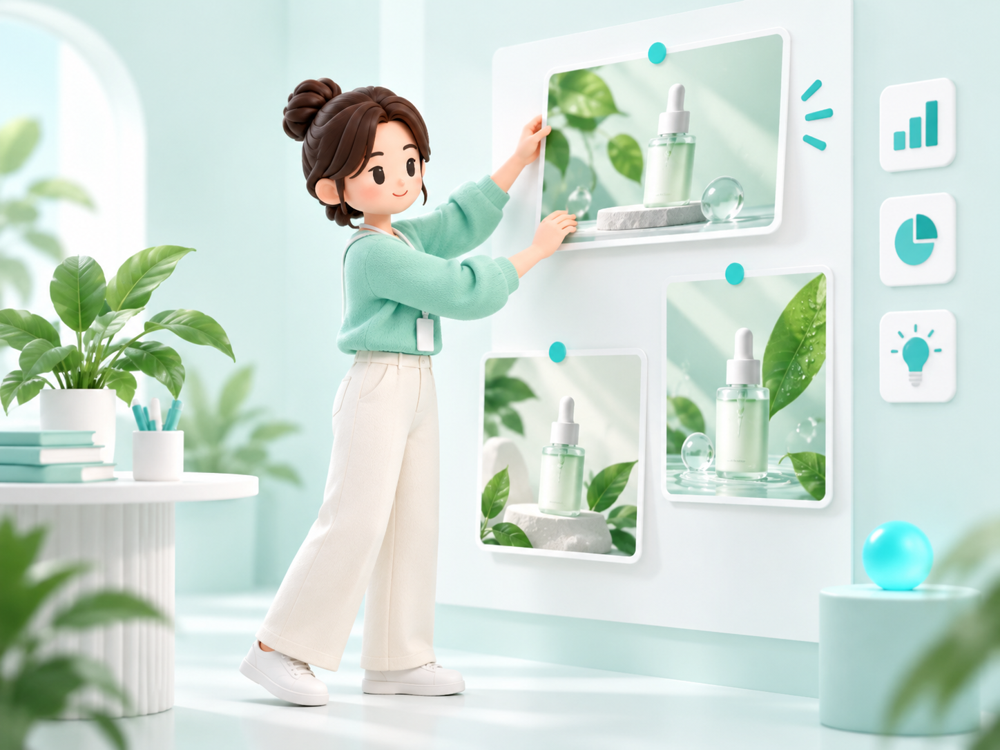
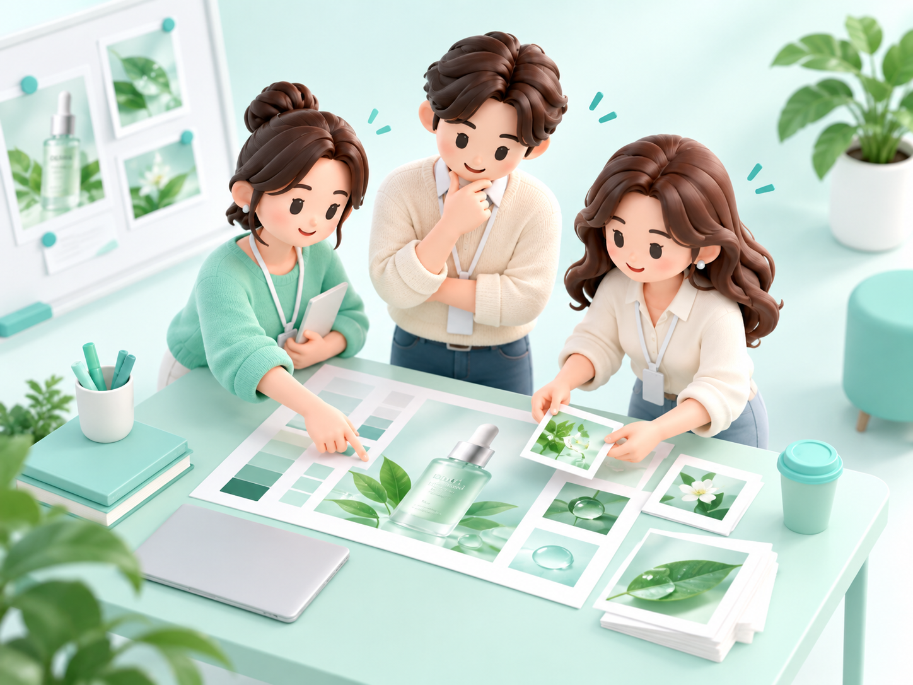
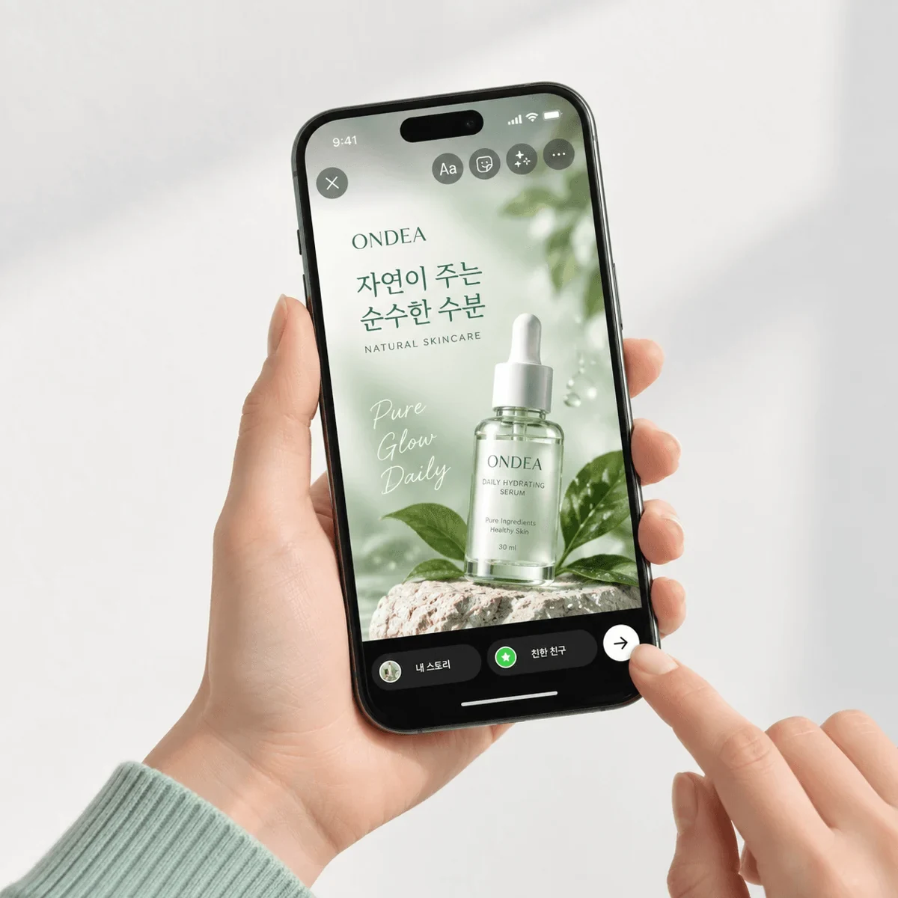
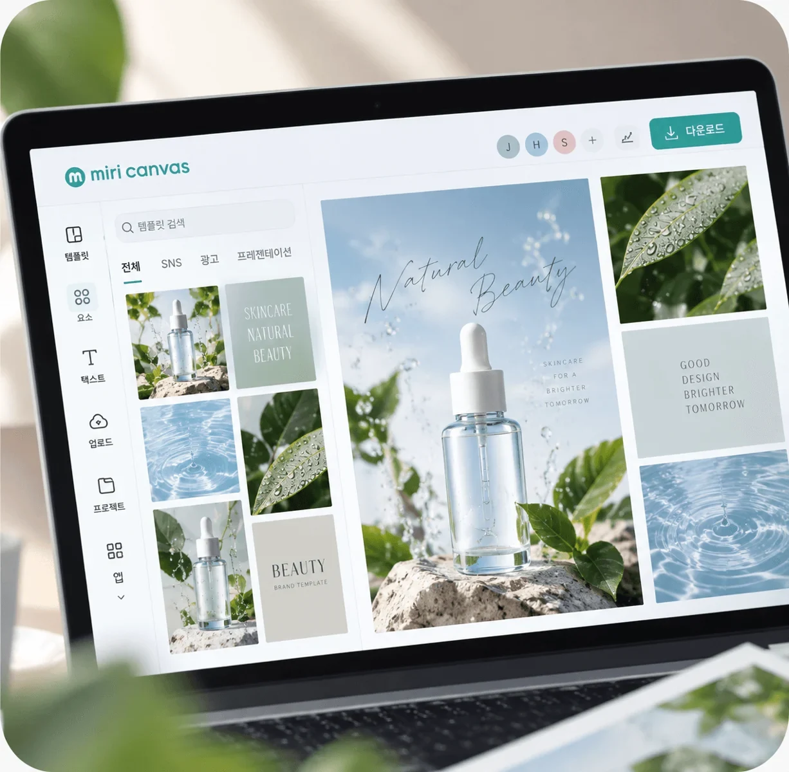
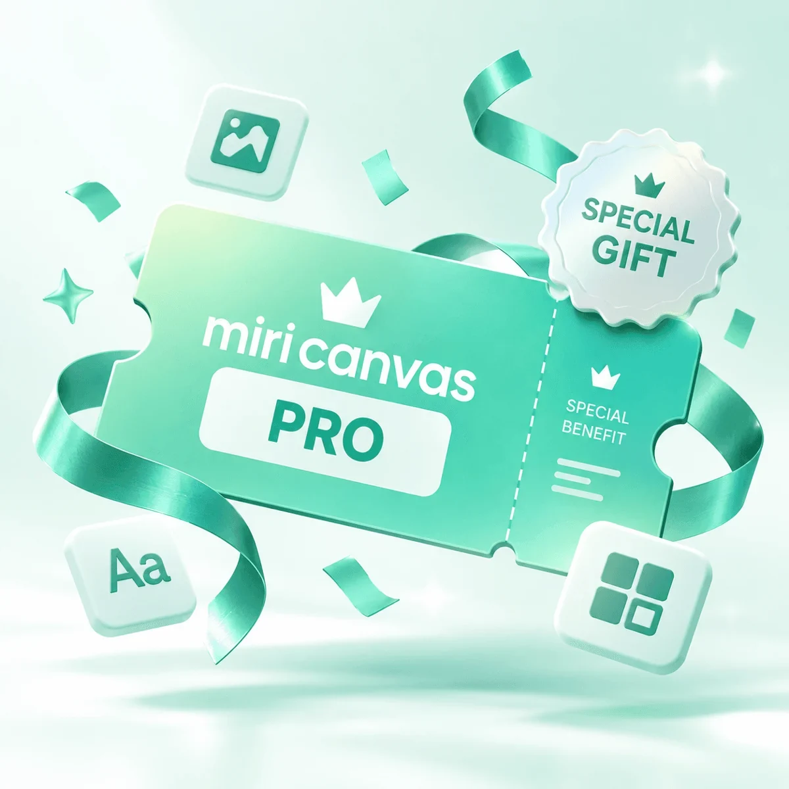

01
디자인이 낯설어도 괜찮아요
디자인이 부담스러운 실무자도AI로 광고 만드는 법을 배워요
디자이너 없이 만드는 AI 광고소재 실무
초안을 만드는 속도에, 완성하는 기준을 더하세요AI와 미리캔버스로 기획부터 검수까지 연결합니다
초안 다음에 마주하는 고민
초안은 빨라졌지만, 무엇을 어떻게 고칠지는 여전히 내 몫이니까요
수정을 줄이는 출발점
원하는 이미지가 나올 때까지 다시 생성하고,
문구와 배치를 따로 고치면 수정은 반복됩니다
누구에게 무엇을 전할지 먼저 정하세요
그 기준으로 초안을 고르고, 수정하고, 검수합니다
목적·타깃·핵심 메시지
유지할 것과 바꿀 것 구분
제품 정보·브랜드·가독성 점검
디자인이 부담스러운 실무자도AI로 광고 만드는 법을 배워요
기획부터 수정·검수·완성까지광고 제작의 흐름을 익혀요
색감·구도·문구를 나눠 살피고유지할 것과 바꿀 것을 정해요

이미지에 문구와 배치를 더해직접 쓸 광고소재를 완성해요
교육 안내
이 흐름을 내 업무에 적용할 수 있도록, 설명과 실습을 함께 진행합니다

디자인이 낯설어도 괜찮아요기획부터 완성까지 직접 해봅니다
설명과 실습을 하루에 연결합니다휴식을 포함해 7시간 진행합니다

가상 제품으로 광고를 만듭니다수정과 검수까지 직접 경험합니다
커리큘럼
01 · 기획
목적과 타깃, 메시지를 정리해구체적인 제작 방향을 잡아요
02 · 생성
기획에 맞게 프롬프트를 쓰고광고에 쓸 이미지를 생성해요

03 · 수정
색감·구도·스타일을 조정해원하는 방향으로 수정해요

04–05 · 검수와 완성
문구와 배치를 더하고 검수해실무에 쓸 광고로 완성해요

직접 해보는 광고 실무
앞서 살펴본 수정·검수 과정을 ONDEA 광고로 먼저 경험해보세요
온데아 데일리 수분 세럼 · 30ml · 24,000원
실습 내용은 외부로 전송하지 않습니다 결과는 PNG와 프롬프트 TXT로 내려받을 수 있습니다

수강혜택

직접 만든 결과물
기획부터 수정·검수까지 거친 광고소재를 남깁니다
이미지는 교육용 예시입니다

수강 혜택
교육 이후에도 제작 과정을 이어가세요
제공 기간·대상·상세 조건은 모집 안내 시 공개합니다기획 → 생성 → 수정 → 검수 → 완성의 과정을 단계별로 따라가는 실습입니다 참여 전에는 사용할 AI 도구와 미리캔버스의 로그인·파일 첨부·다운로드 환경을 확인해주세요
이미지 생성뿐 아니라 광고 목적과 타깃 정리, 피드백을 반영한 수정, 문구와 레이아웃 구성, 최종 검수까지 함께 다룹니다
AI로 필요한 이미지를 생성하고 미리캔버스에서 문구와 레이아웃을 구성해 광고소재를 완성합니다 이 페이지의 ONDEA 실습에서는 오류 검수와 수정, 채널별 배치를 먼저 경험할 수 있습니다
기업의 교육 목적·참여 인원·실무 환경을 정리해 상담 시 전달해주세요 맞춤 진행 가능 범위와 최종 과정은 운영 담당자 확인 후 확정해야 합니다
현재 제공된 자료 기준으로 모집 준비 중입니다 교육 신청 안내에서 문의할 내용을 작성해 내려받을 수 있습니다 실제 접수처와 일정은 모집 안내가 확정되면 공개합니다
현재 시안 PNG와 프롬프트 TXT를 내려받아 사용할 AI에 함께 첨부하세요 검토 결과를 확인하고 반영할 수정안을 선택한 뒤, 이미지 생성을 요청할 수 있습니다 이 페이지가 AI를 직접 호출하거나 파일을 자동 전송하지는 않습니다